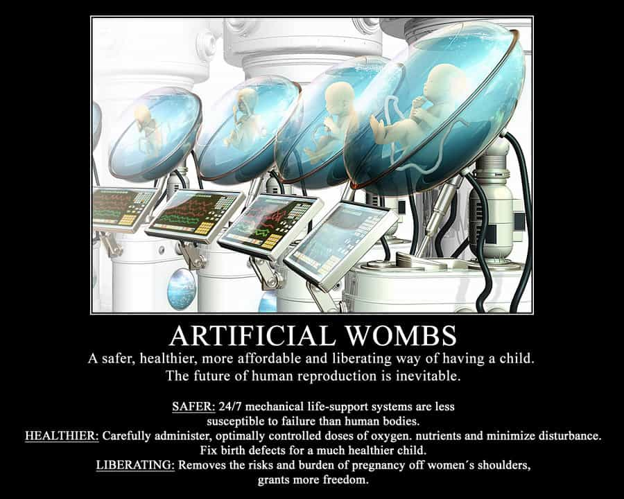

< < < Back
A Period Is No Excuse For A Woman To Be A Bitch – Return Of Kings
Throughout history women have used the fact that their bodies go through some pretty gross stuff to get away with stuff that men would not get away with. This is by telling men that they naturally go through horrible rigor as a natural part of being the sex that is able to bear children so men, the people who don’t pay this price since they don’t have child bearing organs, must pay a greater societal cost in recompense.
Any woman will tell you that having a period is the most horrible god-awful thing that can ever happen to a person and men should be understanding when a woman yells at a man, belittles a man, or hits a man while she is on her period because what she is going through is so very hard and men have no way of knowing what it is like.
So why again was Ray Rice banned from the NFL?
Is This True?
Is there no way for a man to have any idea what a woman’s period is like? Is there no medical condition that a man can get that has similar symptoms?
Actually there is: Crohn’s Disease, also known as ulcerative colitis. Which affects about 3.2 out of every 1000 people in North America and Europe, including myself. This disease (for those who don’t know about it) is the “I have to take a shit every two hours and there is more blood in my stool than there is stool” disease. It is caused by an autoimmune disorder that makes the white blood cells in a person’s body attack their own intestinal tract.
Are these symptoms similar enough to a woman’s period? Lets go down the list.
1. Lots of blood coming out of a hole.
Check, I actually became so anemic that I (a former varsity high school X-Country runner) would be out of breath running up one flight of stairs.
2. Pain in your midsection.
Check, bleeding intestinal lesions are quite painful.
3. Hormonal irritability.
I can’t check the hormone part, but having to wake up two or three times while sleeping means very little REM sleep (especially when you work the graveyard shift) so, Check.
Admittedly, I can’t definitively say whether my condition was better, the same as, or worse than what a woman goes through during her period. However, I can say that if I were living in a tribe in 10,000 B. C. and had this condition I would have died. Women obviously survived those times so I would bet money on my condition being worse, and I had to deal with Crohn’s Disease for four weeks of every month instead of one.
So how did this affect how I treated other people? In general I was nicer. I suspected that a punch to the gut in a fight would really, really hurt and might make me take a bloody shit in my pants, so I took a leave of absence from kung fu and was far more nice and beta to everyone around me. After I finally got treatment (see below) I told some people at work about it and few of them had any idea that anything was wrong.
In short, women are probably purposely exaggerating how bad a period is in order to shame men into feeling that they must put up with their bad behavior. Emotional manipulation is something women are born to do.
What About Childbirth?
This is the other big one that women use all the time to shame men into feeling that they have to give special treatment to women. There is no medical condition even remotely similar to pregnancy, so there truly is no way for a man to say whether or not women are exaggerating the difficulty of pregnancy and childbirth from firsthand experience.
However, men can use the timeless advice, “pay attention to what women do, and not what they say.”
When the chainsaw was first invented did lumberjacks protest it? Did they refuse to use them because they preferred to cut trees down by hand with a regular saw? I highly doubt it. So what has been the reaction of women to artificial womb technology which has the potential to allow a woman to have a child without going through any of the problems of childbirth or pregnancy?

While a few feminists such as Shulamith Firestone have written that artificial womb technology would free women from the tyranny of their biology and bring about gender equality (and a blow to the nuclear family) most feminists are against it. Andrea Dworkin wrote that artificial womb technology would be “the coming genocide.” Gena Corea wrote, “The new reproductive technologies represent an escalation of violence against women, a violence camouflaged behind medical terms.” Janice Raymond used the terms “reproductive abuse” and “the spermatic economy of sex and breeding”—a “spermocracy.”
The mainstream media, which is known to cater to the female collective, also wrote an article against artificial womb technology called: Fetuses in Artificial Wombs: Medical Marvel or Misogynist Malpractice?
She believes men having children without the risk of losing them in family court is the same as genocide.
There are undoubtedly going to be different opinions among ROK readers about artificial womb technology. However, it is safe to assume that most of us would agree that if pregnancy and childbirth was really as terrible as women have historically led men to believe, then there would be unanimous support of artificial womb technology by women.
So the next time a woman in your life tries to make you feel that the bad things society does to men are less than what nature has done to women, know that she is probably exaggerating.
Don’t Worry, I Got Treatment
I put off getting treatment for a while because of unemployment, uncertain future employment, and lack of health insurance. I have a family member who went to a doctor because of some mild knee pain and, due to gross medical incompetence, ended up with tens of thousands of dollars of medical bills and a much worse knee that eventually had to be replaced altogether. I personally don’t fully trust American doctors.
I did eventually get medication for my Crohn’s, but it had bad side effects. After much online research I decided to try a treatment in Mexico called Helminthic Therapy. This is a therapy that works for many different autoimmune diseases such as asthma, Crohn’s, Celiac Disease and others. It involves inoculating a person with a small therapeutic dose of benign hookworms, which release chemicals into the bloodstream to calm down the immune system. Your white blood cells won’t attack the hookworms, and after treatment won’t react to your own body either.
Although this may sound gross, I have had it for over a year now and can report they work perfectly with no side effects. This ordeal taught me that there are almost always solutions to our problems—-so, the next time a woman tries to use her period as an excuse for bad behavior, remember the worms and don’t let her get away with it.
Read Next: Why Hasn’t Feminist Emily Hopper Been Arrested For Assault


{kind=link}
{kind=link}